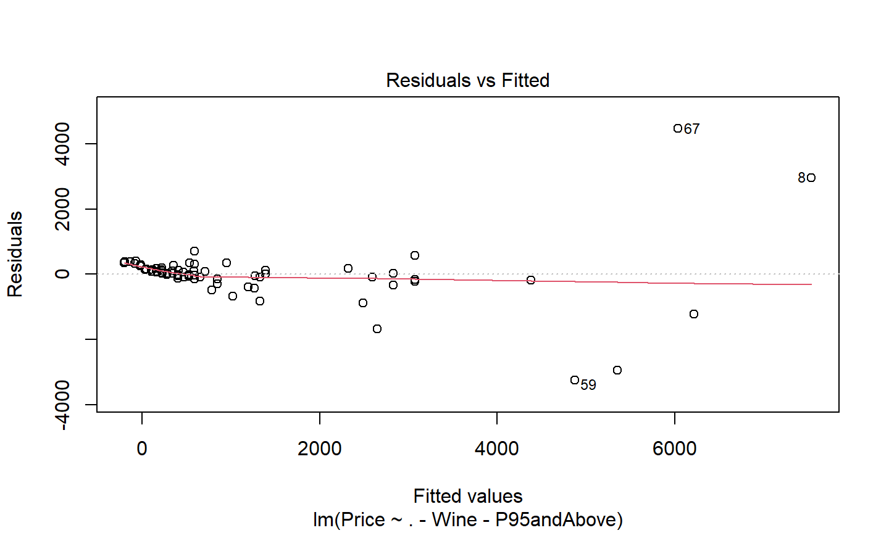
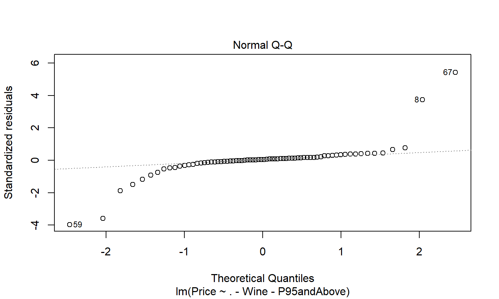
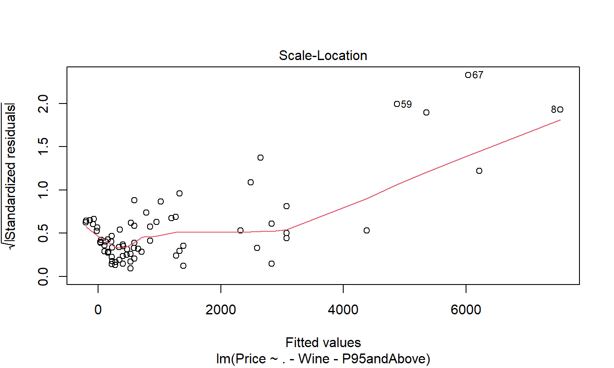
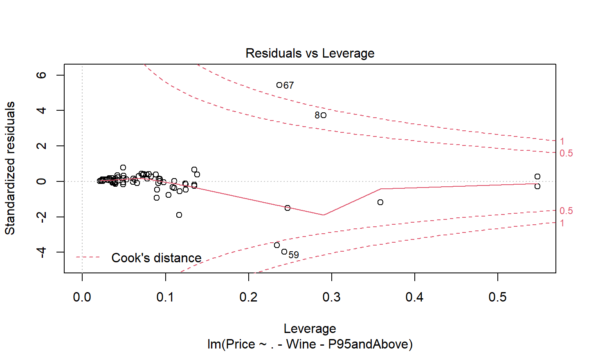

R Bootcamp 2020
bordeaux <- readRDS("data/bordeaux.rds")
Wine - the name of the wine.Price - The price of the wine in pounds sterling(£)ParkerPoints - the rating out of 100 given by Robert Parker.CoatesPoints - the rating out of 20 given by Clive CoatesP95andAbove - a dummy variable, 1 if ParkerPoints>=95FirstGrowth - inditcator of if the wine is a first growthCultWine - indicator of if the wine is a cult winePomerol - indicator for if the wine is from Pomerol, FranceVintageSuperstar - indicator if the wine is a superstarTest if there is a difference in price for first growth wines.
(fg.test <- t.test(Price~FirstGrowth, data=bordeaux))
## ## Welch Two Sample t-test ## ## data: Price by FirstGrowth ## t = -3.0865, df = 9.9044, p-value = 0.01164 ## alternative hypothesis: true difference in means between group FALSE and group TRUE is not equal to 0 ## 95 percent confidence interval: ## -4544.7200 -731.1188 ## sample estimates: ## mean in group FALSE mean in group TRUE ## 815.0806 3453.0000
Formulas, created with a ~, represent relationships. They can
~x
~log(.+1)y ~ x + z
y ~ x + log(z)y ~ x + poly(z,3), a polynomial fit of degree 3 on zy ~ x:zy ~ a*b is equal to y ~ a + b + a:by ~ a + b %in% a or equivalently y~a/bThe fg.test object is a htest object, which prints nicely but what if we want to include this in our table 1?
Try these:
str(fg.test) # get the underlying structure of the object. glimpse(fg.test) # alternative to str that handles some objects better. fg.test$p.value getElement(fg.test, 'p.value') fg.test[['p.value']]
We will rely on the normal approximation for proportions.
model <- lm( Price ~ . - Wine - P95andAbove, data=bordeaux) model
## ## Call: ## lm(formula = Price ~ . - Wine - P95andAbove, data = bordeaux) ## ## Coefficients: ## (Intercept) ParkerPoints ## -7390.78 61.94 ## CoatesPoints FirstGrowthTRUE ## 116.27 2001.41 ## CultWineTRUE PomerolTRUE ## 4583.54 739.16 ## VintageSuperstarTRUE ## 1424.58
Not really useful.
Price ~ . - Wine - P95andAbove should be read as
“Model Price by all variables except Wine and P95andAbove.”
(model.summary <- summary(model))
## ## Call: ## lm(formula = Price ~ . - Wine - P95andAbove, data = bordeaux) ## ## Residuals: ## Min 1Q Median 3Q Max ## -3251.2 -102.5 40.5 167.2 4463.7 ## ## Coefficients: ## Estimate Std. Error t value Pr(>|t|) ## (Intercept) -7390.78 3766.82 -1.962 0.0540 ## ParkerPoints 61.94 44.84 1.381 0.1719 ## CoatesPoints 116.27 119.14 0.976 0.3327 ## FirstGrowthTRUE 2001.41 410.38 4.877 7.28e-06 ## CultWineTRUE 4583.54 470.80 9.736 2.56e-14 ## PomerolTRUE 739.16 305.71 2.418 0.0184 ## VintageSuperstarTRUE 1424.58 715.89 1.990 0.0508 ## ## (Intercept) . ## ParkerPoints ## CoatesPoints ## FirstGrowthTRUE *** ## CultWineTRUE *** ## PomerolTRUE * ## VintageSuperstarTRUE . ## --- ## Signif. codes: ## 0 '***' 0.001 '**' 0.01 '*' 0.05 '.' 0.1 ' ' 1 ## ## Residual standard error: 941.3 on 65 degrees of freedom ## Multiple R-squared: 0.7716, Adjusted R-squared: 0.7506 ## F-statistic: 36.61 on 6 and 65 DF, p-value: < 2.2e-16
coef(model) coef(summary(model)) deviance(model) formula(model) residuals(model)
summary(model) plot(model) predict(model) vcov(model) anova(model) aov(model)
5:00
plot(model, 1) #< Residuals vs. Fitted | Goodness of fit

plot(model, 2) #< Normal Q-Q | Appropriate error model

plot(model, 3) #< Scale-Location | Homoscedasticity

plot(model, 5) #< Residual vs. Leverage | Influential points
